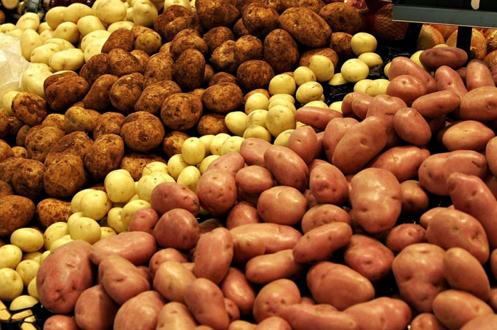

Полезные вещества, оказывающие на организм самое благоприятное воздействие, присутствуют в картофеле в форме определенных соединений. Эти соединения невозможно синтезировать, то есть создать искусственным путем.
Лечение картофелем многовариантно, проще говоря, используются не только цельные клубни, но и сок, цветки, белые ростки, только начинающие появляться из земли, а также полученный из картофеля крахмал. Ну и просто правильное использование этого овоща в питании может дать замечательные результаты. О приготовлении и пользе, например, пюре будет рассказано в разделе кулинарных рецептов: ведь даже такое незамысловатое блюдо может послужить и лечебным целям, и стать самостоятельным блюдом, и гарниром к мясу, птице или рыбе.
Ну а сейчас мы рассмотрим приготовление сока из картофеля, настоя цветков и картофельного крахмала.
Сок картофеля с успехом применяется при лечении широкого спектра заболеваний, при этом он является абсолютно натуральным и достаточно доступным лекарством. В наше время с неблагоприятной экологией очень полезно пить фруктовые и овощные соки для повышения иммунитета и сопротивляемости организма различным вредным воздействиям, восстановления после физических и психологических нагрузок и снижения уровня холестерина. Обычно большинство людей предпочитает фруктовые соки: они вкуснее, и пить их можно не только ради пользы, но и для удовольствия. Однако про овощные соки также не следует забывать. По составу они ничем не уступают фруктовым, а их целебные свойства трудно переоценить. К числу таких соков относится и картофельный.
Даже ради своего здоровья и с целью избавления от болезней не каждый человек с удовольствием будет есть сырой, пусть и тертый, картофель. Это и невкусно, и не очень комфортно для желудка. А при горячей обработке часть полезных составляющих теряется. Совсем другое дело – свежий картофельный сок. Его применять гораздо удобнее и легче, чем сырой картофель, при этом можно принимать как внутрь, так и использовать наружно, поэтому свежий картофельный сок является очень ценным лекарством. Не только народная, но и традиционная медицина рекомендует применять его как противовоспалительное, общеукрепляющее, ранозаживляющее и мочегонное средство. Главное условие – сок должен быть свежеприготовленным.
Какой картофель предпочтительно использовать для приготовления сока? Лучше всего подойдут розовые сорта картофеля, такие как «американка», «утренняя роза» и другие – красного цвета и продолговатой формы: в них больше витаминов, минералов и прочих «полезностей».
При приготовлении сока необходимо помнить, что в картофеле, кроме них, содержится и яд – соланин. В небольших количествах он безопасен и даже полезен. Но употребление в пищу овощей, содержащих соланин в количестве, большем чем 20 мг на 100 г продукта, может вызвать пищевое отравление.
Много соланина содержится в мелком, недозрелом картофеле. По мере созревания, то есть к осени, его количество уменьшается. При длительном хранении – до весны и лета – увеличивается снова. Особенно опасно использовать клубни с ростками: именно в них накапливается яд. Во много раз увеличивается содержание соланина и в зеленом картофеле, при этом он приобретает горький вкус и становится ядовитым.
Поэтому пить сок картофеля желательно с июля до февраля, в это время содержание соланина невелико, и, конечно, использовать нужно только ровные клубни, без повреждений.
Как же правильно приготовить картофельный сок? Все, конечно, замечали, что очищенная и нарезанная картошка начинает быстро темнеть под действием воздуха и света. Достаточно всего десяти минут, чтобы полезные вещества превратились в ненужный балласт. То же происходит и с соком. Поэтому готовить его, напомним, необходимо непосредственно перед приемом и не хранить более десяти минут.
Сначала отбираем подходящие клубни, тщательно их моем и очищаем от кожицы. Затем выбираем способ приготовления сока. Можно использовать соковыжималку – это самый простой и популярный метод. А можно по старинке натереть клубни на пластмассовой терке или прокрутить через мясорубку, затем процедить через марлю, сложенную в несколько слоев. Готовый сок должен отстояться не более минуты, после чего его сразу нужно пить.
Для общеукрепляющего действия или профилактики пить сок необходимо каждый раз перед едой, обычно три раза в день. Общий объем в сутки не должен превышать 500 г. При различных заболеваниях доза и способ употребления подбираются индивидуально.
После употребления свежевыжатого сока необходимо обязательно прополоскать рот или даже почистить зубы, так как он плохо действует на зубную эмаль. Несмотря на не очень приятный вкус, разбавлять картофельный сок другими (например, фруктовыми) соками не рекомендуется – от этого он теряет часть питательной ценности.
При всех достоинствах натуральных соков, в том числе и картофельного, необходимо помнить и о некоторых недостатках. Во-первых, для получения видимого эффекта от применения соков пить их нужно достаточно долгое время, независимо от того, хотите ли вы просто оздоровить организм или вылечить конкретное заболевание.
Во-вторых, при принятии решения о лечении свежими соками необходимо учесть индивидуальные особенности каждого организма. Не обязательно то, что помогло вашему знакомому, будет полезно и вам, так что вы можете не добиться желаемого эффекта. В-третьих, в любом случае нежелательно заниматься самолечением, даже, казалось бы, таким безвредным способом. В обязательном порядке следует проконсультироваться с врачом, который учтет все особенности вашего заболевания и примет решения о целесообразности данного лечения.
Цветки. Посмотрите на грядки с цветущим картофелем – удивительно, но на цветках вы не увидите ни букашки, ни жучка, ни пчелки. Почему? Все дело в том, что цветы картофеля просто-напросто ядовиты. В них большое содержание все того же соланина. Но, как и многие из ядов, в небольших количествах и при правильном использовании они могут дать удивительный эффект в лечении различных заболеваний, вплоть до онкологии. Главное – не переусердствовать в желании быстрейшего излечения.
Соланин – яд с кумулятивным действием, то есть он накапливается в организме при постоянном употреблении в течение длительного времени. При этом он прочно удерживается в организме и очень медленно выводится из него. Поначалу признаки отравления незаметны, и только при определенной концентрации яда начинается тошнота, рвота, сердечная недостаточность, в тяжелых случаях не исключено даже коматозное состояние. Поэтому обязательно строгое соблюдение режима применения и дозы вещества.
Для приготовления снадобий собирают цветы после их полного распускания, рано утром, когда высыхает роса. Собирать картофельные цветы следует в сухую погоду, потом их сушат под навесом, оберегая от попадания прямых солнечных лучей. Можно заготовить сухие цветки впрок и хранить их примерно в течение года в хорошо проветриваемом помещении, насыпав в мешочки из хлопчатобумажной ткани.
Используется водный настой цветов. Одну чайную ложку цветков заливают стаканом крутого кипятка и настаивают до тех пор, пока вода не остынет. Но хранить ее долго нельзя: обычно на второй день она начинает портиться – появляется неприятный запах, плесень. Лучше использовать водный раствор с добавлением спирта. Делается он так: 0,8 л водного настоя цветков смешать со 100 мл водки. Такая смесь хранится достаточно долго, а применять ее можно не более двух раз в сутки по 2 ст. ложки, запивая небольшим количеством теплой кипяченой воды. Это умеренное количество, и оно не вызывает токсического эффекта.
Спиртовая настойка картофельных цветков готовится следующим образом: чистую стеклянную банку или бутыль заполняют ими до самого верха. Сильно утрамбовывать цветки не нужно. Потом наливают в тару спирт, тоже доверху, закрывают крышкой и ставят в темное место на две недели. Принимать настойку можно из расчета 5–8 капель на полстакана воды, а пить 3 раза в день. Такой настойкой полезно растирать больные места, например при радикулите.
Самым лучшим способом заготовки цветков впрок можно считать такой. Свежесобранные цветки пропустить через мясорубку. Полученную массу уложить на дно сосуда, который потом можно будет плотно закрыть, залить водкой. Дать настояться неделю. Настойка готова. Свойства цветков в таком виде сохраняются идеально, а сама смесь может храниться очень долго. Но применять этот состав надо очень осторожно – не более 10 капель в день, лучше добавлять в чай или чистую воду, ни одна лишняя капля не должна использоваться. Если вы почувствовали малейшие признаки отравления, необходимо прекратить прием хотя бы на 2–3 дня, а то и на более долгий срок.
Настойку цветов картофеля можно применять и наружно. Для этого смочить толстую мягкую ткань и приложить к местам, где есть опухоль или поражения микозом. Это также дает положительный эффект. Держать компресс можно от одного до нескольких часов. Если держать повязку долго, ей надо время от времени давать охлаждаться, так как на теле она сильно разогревается. Более конкретно об этом будет рассказано в главе, касающейся лечения.
В заключение необходимо еще раз отметить, что самостоятельно принимая решение о лечении тем или иным народным средством, оцените не только его достоинства, но и возможные проблемы, которые могут возникнуть при его применении. И конечно, запаситесь терпением.
Приготовление картофельного крахмала в домашних условиях. Если вам небезразличен состав продуктов, которые вы используете для приготовления пищи или как наружное средство, советуем сделать домашний крахмал.
Для этого тщательно промойте картофель, очистите кожицу и натрите на терке. Натертую массу залейте водой так, чтобы она только немного выходила за слой картофеля. Затем интенсивно перемешайте получившуюся смесь. Когда вода станет молочного цвета, это означает, что в нее попал крахмал из картофеля. Полученное «молочко» нужно осторожно перелить в другую кастрюлю.
Повторять данную операцию нужно несколько раз. Когда после очередного интенсивного перемешивания вода уже не становится молочного цвета, можно закончить. Получившуюся жидкость процедите и настаивайте до тех пор, пока не образуется четкий верхний прозрачный слой и вязкий осадок. Верхний слой воды осторожно слейте и снова залейте остаток водой. Повторить такую операцию достаточно 2–3 раза. После этого в кастрюльке должна остаться густая белая и скользкая масса – крахмальный кисель. Теперь его необходимо высушить.
Для этого нужна посуда, которая позволит налить жидкость равномерным широким слоем, не больше сантиметра. Лучше всего использовать противень или плоскую жаровню. Выкладываем крахмальную массу на приготовленную поверхность, разравниваем и накрываем марлей. Сушить крахмал надо в помещении, где нет прямого солнечного света, не допускается какой-либо подогрев, особенно открытый огонь. Время сушки может быть от двух дней до недели.
В итоге у вас получится белый хрустящий порошок – картофельный крахмал. Конечно, этот процесс потребует от вас некоторых затрат времени и может показаться, что проще купить продукт в магазине. Так оно и есть, однако некоторые рачительные хозяева, не желая выбрасывать мелкий картофель или использовать его в кулинарных целях, с успехом готовят из него крахмал. К тому же они уверены, что в таком продукте нет никаких примесей и химии.